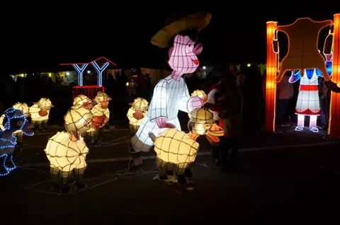
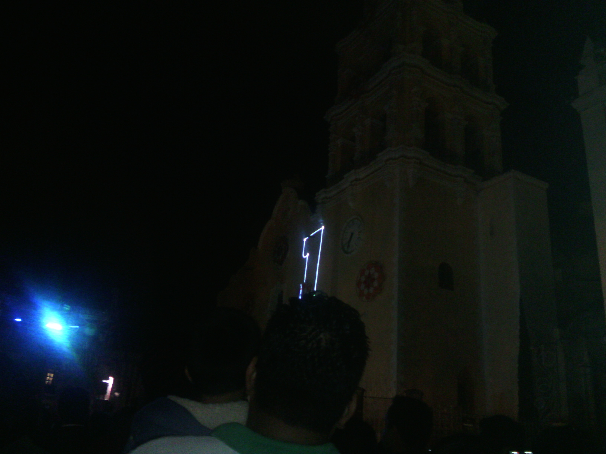
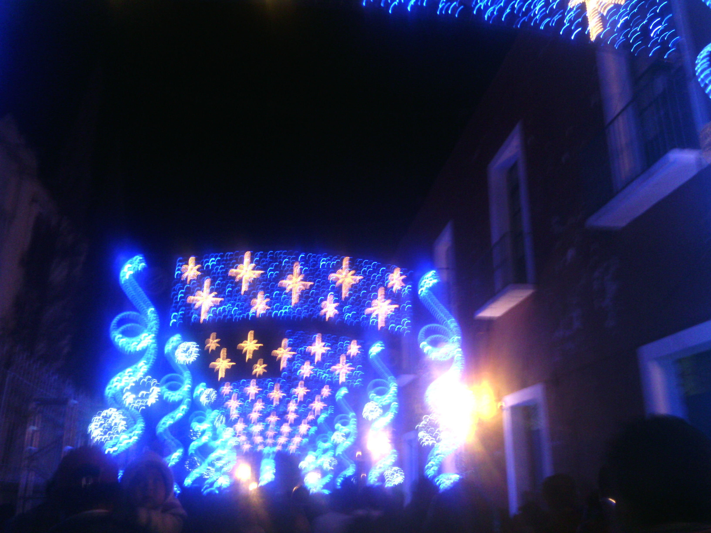
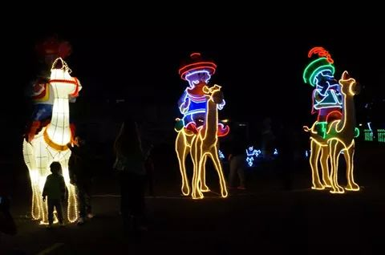

En el municipio de Atlixco, Puebla, inician los festejos navideños con la instalación de la Villa Iluminada, en donde se colocan enormes figuras elaboradas con luces.PUEBLA, México, nov. 30, 2014.- En el municipio de Atlixco en Puebla la Navidad ya se siente y se vive con muchas luces de colores, es la Villa Iluminada. Gumercindo Campos, vistante: "Pues todo, los arreglos la decoración, las luces, muy bonito; esta muy bonita la Villa iluminada." Isabel Santos, funcionaria de promoción turística municipal: "Aparte de lo que es los monumentos históricos y religiosos que están iluminados, puedes encontrar todo lo que son, pues casi más de un kilómetro iluminado donde puedes encontrar figuras desde nacimientos, algunas como villancicos, luces, túneles una fuente y bueno el recorrido está muy interesante." Por cuarto año consecutivo la fachada del palacio municipal, el zócalo, edificios y algunas casonas del centro fueron iluminadas con enormes figuras elaboradas con luces de diversos colores. Abigail González, asistente: "Las luces están increíbles; sobre todo es familiar puedes venir con tu familia, con tus amigos."
En el municipio de Atlixco, Puebla, inician los festejos navideños con la instalación de la Villa Iluminada, en donde se colocan enormes figuras elaboradas con luces PUEBLA, México, nov. 30, 2014.- En el municipio de Atlixco en Puebla la Navidad ya se siente y se vive con muchas luces de colores, es la Villa Iluminada. Gumercindo Campos, vistante: "Pues todo, los arreglos la decoración, las luces, muy bonito; esta muy bonita la Villa iluminada." Isabel Santos, funcionaria de promoción turística municipal: "Aparte de lo que es los monumentos históricos y religiosos que están iluminados, puedes encontrar todo lo que son, pues casi más de un kilómetro iluminado donde puedes encontrar figuras desde nacimientos, algunas como villancicos, luces, túneles una fuente y bueno el recorrido está muy interesante." Por cuarto año consecutivo la fachada del palacio municipal, el zócalo, edificios y algunas casonas del centro fueron iluminadas con enormes figuras elaboradas con luces de diversos colores.
"Son alrededor de 3 mil figuras que podrás encontrar aquí en la Villa Iluminada", agregó Isabel Santos. La avenida del Ferrocarril es otro de los atractivos más visitados de la Villa iluminada. Noche buenas, esferas, moños, estrellas y pastores adornan las calles y lugares públicos del pueblo mágico en este fin de año. Lizet Vianey González, habitante: "La verdad está muy bonito tuvimos la oportunidad de estar desde la inauguración y muy atractivo, muy interesante para los niños más que nada y hasta para uno como adulto." La Villa iluminada es encendida todos los días a partir de las 7 de la noche y este espectáculo de luces puede admirarse hasta el próximo 6 de Enero.
Se espera la visita de poco más de 400 mil personas.Autoridades municipales esperan la llegada de más de 3 mil personas diarias, mientras que para el tradicional desfile de Día de Reyes esperan afluencia de 50 mil personas aproximadamente.
una derrama económica de 30 millones de pesos. Atlixco. Más de 10 millones de puntos iluminados a cargo de la empresa francesa “Blanchere” en 1.5 kilómetros de recorrido, serán los que podrán disfrutar visitantes y turistas durante la Villa Iluminada 2013 que fue inaugurada este viernes 22 de noviembre y que concluirá el próximo 6 de enero de 2014. El presidente municipal Ricardo Camacho Corripio señaló que la Villa Iluminada genera 150 empleos directos y se espera la visita de poco más de 400 mil personas en los 45 días que dura esta festividad además de una derrama económica de 30 millones de pesos.
Villa iluminada 2014 cuenta con una gran atracion como tambien tiene un recorido muy bonito lo cula ay aficionados para que puedas pasar un rato agradable con amigos o familiares.